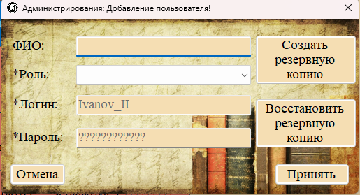
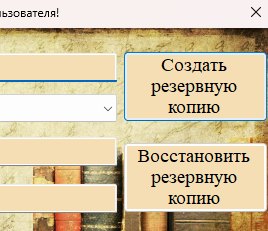

В системе предусмотрены функции резервного копирования и восстановления базы данных. Эти функции доступны только администратору и находятся в форме управления пользователями.

Рис. 1. Кнопки «Создать резервную копию» и «Восстановить» в форме управления пользователями
Где находятся функции бэкапа
Функции резервного копирования и восстановления расположены в форме управления пользователями. Чтобы получить к ним доступ:
1. Перейдите в раздел «Данные → Пользователи».
2. Нажмите кнопку «Добавить» или «Редактировать» — откроется форма.
3. В правой части формы находятся две кнопки (они видны только администратору).

Рис. 2. Кнопки «Создать резервную копию» и «Восстановить резервную копию»
Доступность функций
| Пользователь | Создание резервной копии | Восстановление из копии |
|---|---|---|
| Администратор (Admin) | ✓ | ✓ |
| Сотрудник (Employer) | ✗ | ✗ |